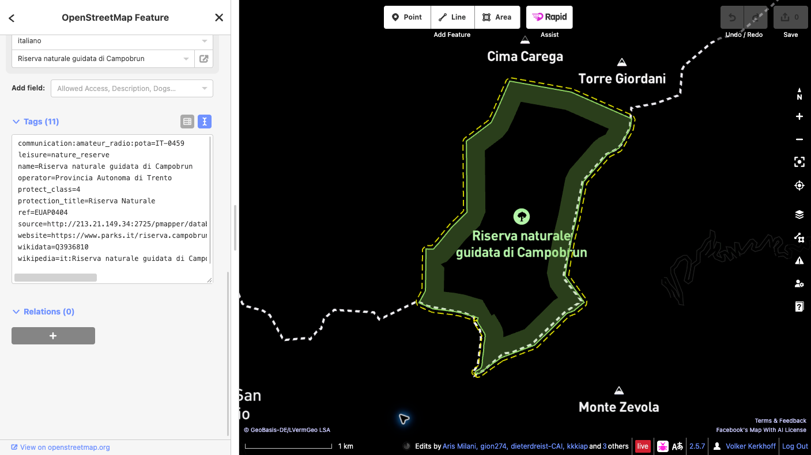

Aggiungere un riferimento POTA a OpenStreetMap
Questa guida spiega come collegare un elemento esistente di OpenStreetMap (OSM) relativo a un parco al suo riferimento Parks on the Air (POTA).
Esempio della guida
Campobrun Natura 2000 — ID POTA IT-0459. Verifica l’area nella scheda ufficiale POTA.
Prima di iniziare
Per caricare modifiche serve un account OpenStreetMap attivo. Se non ne hai uno, registrati prima, poi accedi. Questa guida usa l’editor iD nel browser.
Procedura
- Verifica il parco. Cerca Campobrun su OSM e controlla nome, estensione e tag esistenti dell’elemento che rappresenta l’intera area protetta. Un’area protetta può essere mappata come relazione multipoligono o come way chiusa.
- Seleziona l’elemento completo. In iD, ingrandisci la mappa e seleziona l’area del parco. Se hai selezionato una way membro, apri la relazione che rappresenta l’area protetta. Non aggiungere il tag a tutte le way del confine.
- Aggiungi un solo tag. Nel pannello dell’elemento apri Tutti i tag (la dicitura può variare leggermente secondo la versione di iD) e aggiungi esattamente:
communication:amateur_radio:pota=IT-0459Non modificare i tag esistenti né la geometria. Non creare un nuovo punto o confine per il codice POTA. Se il tag POTA esiste già o l’elemento non è chiaro, fermati e chiedi alla comunità OSM locale.

- Salva la bozza e controllala. Fai clic su Salva per aprire il pannello di caricamento. Leggi l’elenco completo delle modifiche in sospeso e verifica che contenga soltanto il tag POTA previsto sull’elemento corretto. Inserisci un commento descrittivo per il changeset, ad esempio:
Aggiunto il riferimento POTA IT-0459 a Campobrun Natura 2000. - Dai la conferma finale. Prima del caricamento, verifica che l’elemento selezionato rappresenti l’intera area protetta, che chiave e valore siano esattamente
communication:amateur_radio:pota=IT-0459e che geometria e altri tag siano invariati. Leggi eventuali avvisi. Se qualcosa non è corretto, annulla e modifica la bozza. Quando tutto è corretto, fai clic su Carica per pubblicare la modifica su OSM. Il caricamento è la conferma pubblica definitiva. - Verifica la modifica pubblicata. Quando iD conferma il caricamento, riapri l’elemento su OSM e controlla che il tag sia presente. Se il caricamento non riesce, segui il messaggio d’errore e riprova solo dopo aver ricontrollato le modifiche. La mappa POTA potrebbe aggiornarsi dopo qualche minuto.